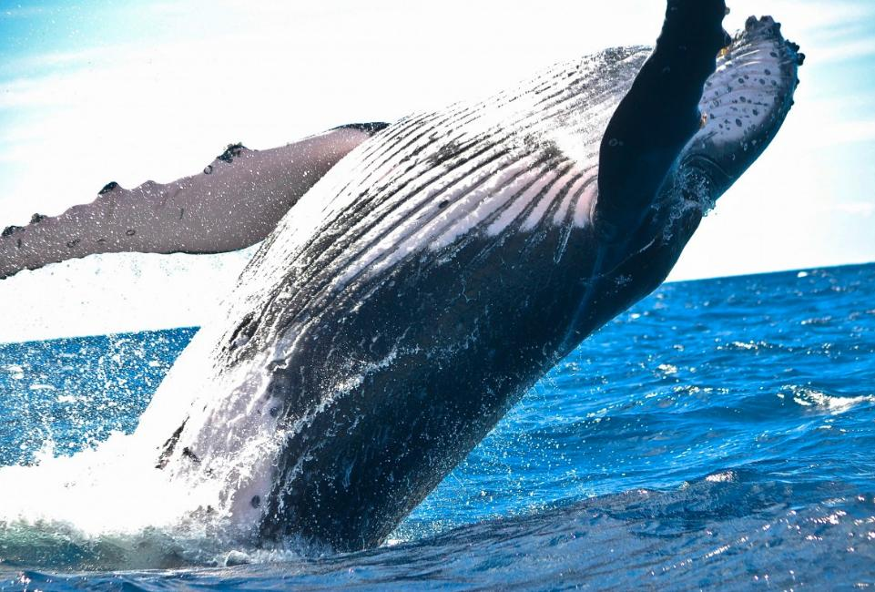
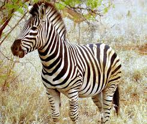
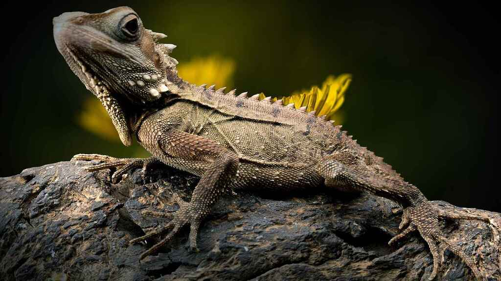

CAPACITACION DE INFORMATICA
Creacion de una tabla con organismos animales
Colegio de bachilleres del estado de Yucatan (COBAY)
ORGANINISMOS ANIMALESORGANISMOS ANIMALES
| AVES | REPTILES | MAMIFEROS | ANFIBIOS | PECES |
 |
 |
 |
 |
 |
| Aguila | Cocodrilo | Leon | Salamandra | Pez mandarin |
| Aquila Chrysaetos | Crocodyle | Panthera leo | Urodela | Synchiropus splendidus |
 |
 |
 |  |
|
| Tucan | Dragon de comodo | Ballena | Sapo comun | Pez leon |
| Ramphastidae | Varanus komodoensis | Balaenidae | Bufo bufo | Pterois antennata |
 |
 |
 | ||
| Quetzal | Tortuga carey | Cebra | Triton | Cecilia |
| Pharomachrus mocinno | Eretmochelys imbricata | Equus zebra | Triturus | Dermophis oaxacae |
 |
 |  |
 |
 |
| Gaviota | Lagarto | Delfin | Rana de nueva zelanda | Pez Napoleon |
| Laridae | Lacertilia | Delphinidae | Litoria caerulea | Cheilinus undulatus |
 |
 |
|||
| Cardenal | Cobra | Chimpance | Ajolote | Pez araña |
| Cardinalis cardinalis | Ophiophagus hannah | Pan | Ambystoma mexicanum | Trachinus draco |